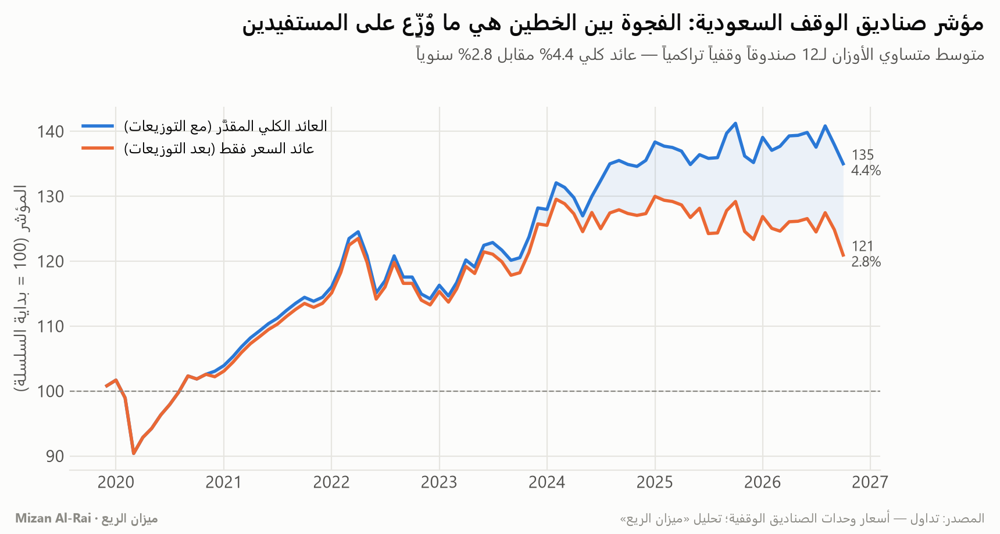
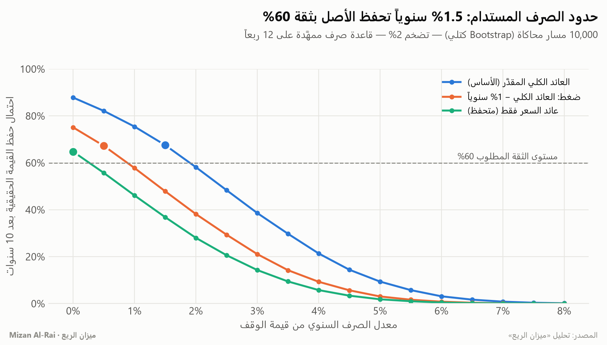
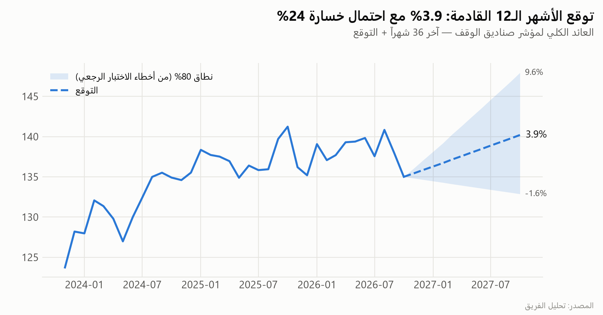
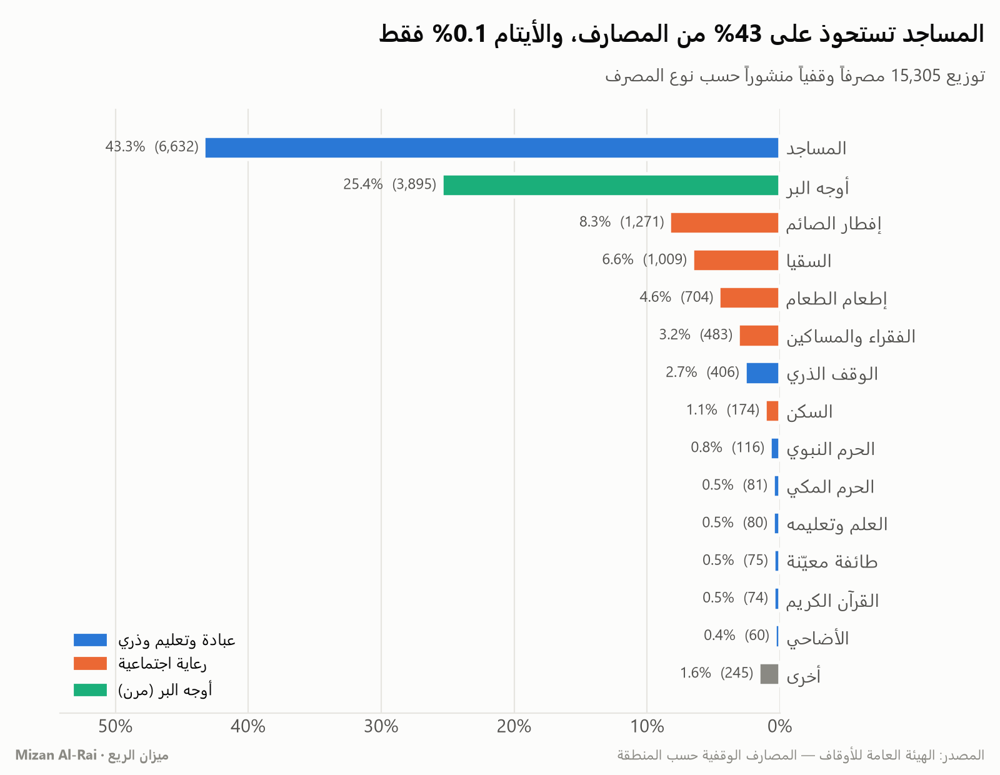

يواجه ناظر الوقف كل عام قراراً واحداً متكرراً: كم أصرف، وعلى أي مصرف؟ الصرف الزائد يُرضي المستفيدين اليوم ويُضعف الوقف غداً، والصرف الناقص يحبس الخير. حوّلنا هذا القرار إلى أرقام من بيانات حقيقية، ثم إلى أدوات يستطيع الناظر ومدير الصندوق والجهة المنظِّمة اعتمادها.
18 مجموعة بيانات من منصة البيانات المفتوحة الوطنية، منها 15,305 مصرفاً وقفياً في 13 منطقة، والشهادات الوقفية (من 384 في 2019 إلى 9,409 في 2025)، والمستفيدون المباشرون (من 3,160 إلى 3,744).
أسعار وحدات 26 صندوقاً استثمارياً وقفياً مرخصاً (أصول ≈ 3.1 مليار ريال) من 2019-12 إلى 2026-10. هذه الصناديق أوقاف: وحداتها موقوفة وعوائدها تُصرف على جهات غير ربحية، فهي بيانات قطاع غير ربحي.
كل لقطة خام محمية بفحص سلامة، و12 قاعدة تنظيف موثقة آلياً، منها توحيد التهجئات العربية للمصارف، وإزالة أسعار ما قبل الاستثمار، واستيفاء الفجوات الربعية مع تعليمها، وكشف 25 توزيعاً مخفياً يظهر كهبوط في سعر الوحدة بينما صناديق المديرين الآخرين صاعدة.

تصنيف من A إلى E لكل صندوق وقفي، يجيب عن سؤال واحد يفهمه أي واقف: هل حافظت قيمة الوحدة الموقوفة على قوتها الشرائية؟ الدرجة مبنية على سعر الوحدة المرصود مباشرة (بعد التوزيعات)، فلا تعتمد على أي تقدير. صنّفنا 24 صندوقاً، منها 9 بسجل أقل من 36 شهراً وُسمت «مبدئي».
| الدرجة | المعنى | عدد الصناديق | منها مبدئي |
|---|---|---|---|
| A | الأصل محفوظ فعلياً: قيمة الوحدة نمت بمعدل التضخم أو أكثر | 10 | 2 |
| B | محفوظ اسمياً فقط: قيمة الوحدة نمت أقل من التضخم | 2 | 0 |
| C | تآكل طفيف: قيمة الوحدة نقصت حتى 2% سنوياً | 10 | 5 |
| D | تآكل واضح: قيمة الوحدة نقصت بين 2% و5% سنوياً | 1 | 1 |
| E | تآكل شديد: قيمة الوحدة نقصت أكثر من 5% سنوياً | 1 | 1 |
| الصندوق | المدير | أشهر | نمو الوحدة سنوياً | أسوأ هبوط | الدرجة |
|---|---|---|---|---|---|
| Nafaqah | Jadwa | 70 | 5.2% | -7.4% | A |
| King Saud University | SNB | 60 | 3.4% | -7.3% | A |
| Alinma Enayah | Alinma | 75 | 3.4% | -10.2% | A |
| Orphan Care | Alinma | 75 | 3.1% | -12.6% | A |
| Alinma Wareef | Alinma | 75 | 3.0% | -11.7% | A |
| Alinma Roads Mosques | Alinma | 75 | 3.0% | -9.5% | A |
| Bir Ariyadh | Alinma | 71 | 2.8% | -8.5% | A |
| Ensan | ALBILAD | 83 | 2.5% | -12.7% | A |
| Jood (مبدئي) | SNB | 12 | 9.9% | -5.4% | A |
| Ehsan (مبدئي) | SNB | 23 | 2.5% | -5.1% | A |
| Autism | Al Rajhi | 38 | 0.6% | -5.5% | B |
| Eastern Region | Al Rajhi | 38 | 0.0% | -5.8% | B |
| Doyof Al Rahman | Al Rajhi | 37 | -0.0% | -5.6% | C |
| Quran Kareem | Al Rajhi | 38 | -0.0% | -6.4% | C |
| Shifa Health | Al Rajhi | 41 | -0.1% | -5.9% | C |
| Health | Al Rajhi | 37 | -0.3% | -6.0% | C |
| Orphans | Al Rajhi | 38 | -0.4% | -6.4% | C |
| Trahum (مبدئي) | Al Rajhi | 32 | -0.3% | -4.8% | C |
| Al Rajhi (مبدئي) | Al Rajhi | 22 | -0.5% | -5.0% | C |
| King Khalid University (مبدئي) | Alinma | 27 | -0.7% | -6.4% | C |
| Takaful (مبدئي) | Al Rajhi | 33 | -1.1% | -6.6% | C |
| ALSuqia (مبدئي) | Al Rajhi | 25 | -1.5% | -6.0% | C |
| Alinma (مبدئي) | Alinma | 19 | -4.6% | -7.8% | D |
| King Faisal University (مبدئي) | ALBILAD | 17 | -8.0% | -16.8% | E |
من ينفّذها؟ الهيئة العامة للأوقاف أو هيئة السوق المالية تنشرها سنوياً من بيانات منشورة أصلاً، ومدير الصندوق يضعها في نشرة الصندوق. ماذا تضيف؟ معياراً واحداً شفافاً يقارن به الواقف بين الصناديق، وإنذاراً مبكراً لأي صندوق يبدأ أصله بالتآكل. حدودها: الصناديق الجديدة انطلقت في سوق هابط فدرجتها مبدئية، وتغيير افتراض التضخم نصف نقطة يغيّر درجة 1 صندوق فقط.
قاعدة من جزأين. أولاً: الصرف من متوسط قيمة الوقف لآخر 12 ربعاً لا من قيمته اليوم، فلا يتذبذب دخل المستفيد مع السوق: عند المعدل نفسه ينخفض احتمال قطع الصرف أكثر من 5% في سنة واحدة من 75% إلى 25%. ثانياً: اختيار المعدل من نطاق معلن حسب شهية المخاطرة، مع رؤية المقايضة كاملة:
| الخيار | معدل الصرف | قيمة الأصل الحقيقية بعد 30 سنة | احتمال حفظ الأصل | مجموع الصرف الحقيقي في 30 سنة | الصرف السنوي في السنة 30 |
|---|---|---|---|---|---|
| متحفظ | 1.5% | 132 | 79% | 50 | 1.88 |
| متوازن | 2.0% | 114 | 64% | 62 | 2.18 |
| مستوى التوزيع الأخير | 4.0% | 61 | 8% | 95 | 2.45 |
الأرقام لأصل قيمته 100 اليوم، بأسعار اليوم، من 10,000 مسار محاكاة بإعادة معاينة كتلية لتاريخ المؤشر الفعلي وتضخم 2%.


من ينفّذها؟ ناظر الوقف ومجلس إدارة الصندوق، بتعديل سياسة التوزيع فقط. ماذا تضيف؟ دخلاً أثبت للمستفيد وأصلاً لا يتآكل. حدودها: التاريخ 83 شهراً فقط، فالمحاكاة لثلاثين سنة تقدير لا تنبؤ، وفي سيناريو الضغط ينخفض المعدل المتحفظ إلى 0.5%.
شروط الواقفين تبقى كما هي. الحصة المرنة «أوجه البر» (25% من المصارف وطنياً) هي التي يملك الناظر توجيهها، فتُوزَّع بأوزان أولوية معلنة نحو الاحتياجات الأقل تغطية. مثال وقف بقيمة 10 ملايين ريال وميزانية 150,000 ريال بعد عمارة الوقف والاحتياطي:
| المصرف | من شروط الواقفين | بعد التوجيه |
|---|---|---|
| إطعام الطعام | 5,520 | 8,886 |
| الفقراء والمساكين | 3,787 | 7,637 |
| السكن | 1,364 | 4,731 |
| الأيتام | 125 | 3,975 |
| الأرامل | 47 | 3,655 |

من ينفّذها؟ ناظر الوقف عند إعداد خطة الصرف السنوية. ماذا تضيف؟ ترتفع حصة الاحتياجات الأساسية من 9% إلى 24% دون مخالفة أي شرط، وأكبر أثر في الحدود الشمالية. حدودها: الأوزان افتراضات معلنة قابلة للتعديل، لأن بيانات الاحتياج حسب المنطقة غير منشورة.
| الحل | من ينفّذه | بماذا | ماذا يضيف |
|---|---|---|---|
| بطاقة استدامة الوقف | الهيئة العامة للأوقاف، هيئة السوق المالية | أسعار الوحدات المنشورة | معيار مقارنة شفاف لـ24 صندوقاً وإنذار مبكر بالتآكل |
| قاعدة ميزان للصرف | النظّار ومجالس الصناديق | تعديل سياسة التوزيع | احتمال قطع الصرف من 75% إلى 25%، وأصل محفوظ |
| بوصلة المصارف | النظّار | خطة الصرف السنوية | حصة الاحتياجات الأساسية من 9% إلى 24% |